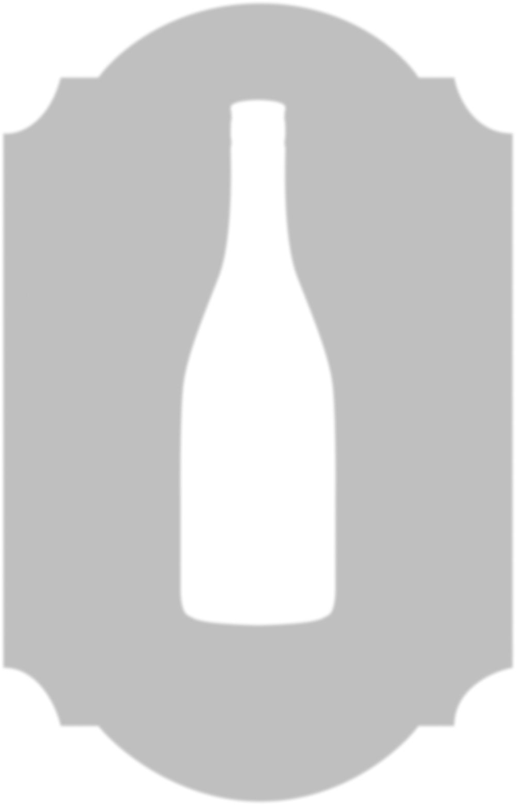
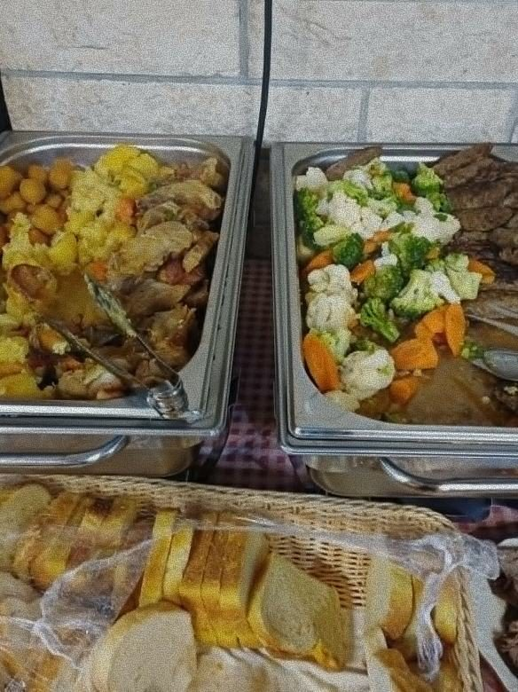
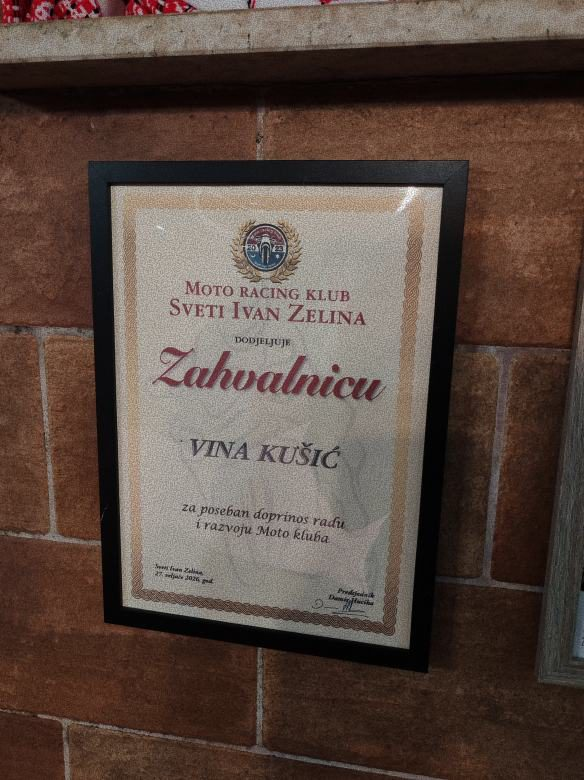
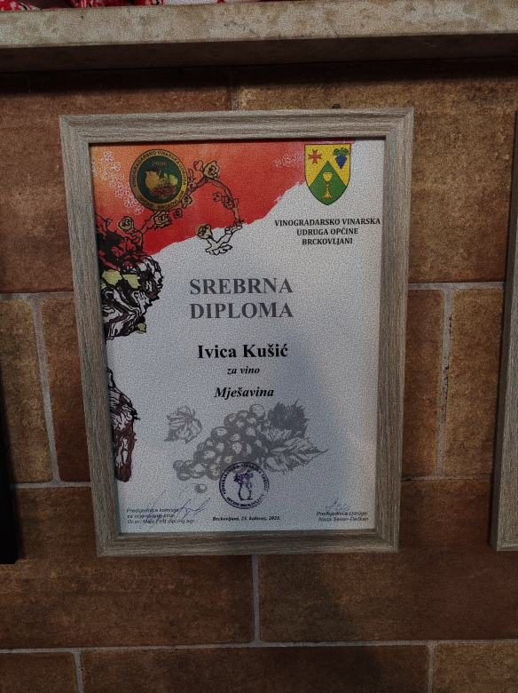

Vinarija
 Kušić
Kušić
Kušić
Kušić
Graševina
zlatne boje, bogatog mirisa i prepoznatljivih mednih nota.

VINA
Odnjegovano u obiteljskom podrumu Kušić
Psarjevo Donje 11, Sv. Ivan Zelina
Kapljica
nježne zlatne boje, ugodnog mirisa i skladnog, pitkog okusa.
Priča o Vina Kušić započinje davne 1917. godine, kada su postavljeni prvi temelji obiteljske tradicije koja traje više od jednog stoljeća. Ljubav prema vinogradarstvu i predan rad prenose se s generacije na generaciju, stvarajući priču satkanu od truda, upornosti i poštovanja prema zemlji. Početkom prošlog stoljeća Mirko Kušić zasadio je prve trsove kraljevine, sorte koja je obilježila početke naše obitelji u vinogradarstvu. S tek tisuću posađenih cjepova započelo je putovanje koje će tijekom godina prerasti u ozbiljnu i prepoznatljivu vinsku priču.
Godine 1957. obiteljskoj tradiciji pridružuje se druga generacija. Slavko Kušić nastavlja razvijati vinograde i širi proizvodnju, a 1978. godine podižu se novi nasadi kraljevine i graševine. Vinogradi rastu, proizvodnja se povećava, a obiteljsko gospodarstvo postupno stječe ugled među ljubiteljima vina. Nakon teških trenutaka i izazova koji su obilježili početak osamdesetih godina, obitelj nastavlja predano raditi i razvijati svoj posao. Upravo tada započinju i prvi nastupi na vinskim izložbama diljem regije, od Slovenije do Novog Sada, gdje vina Kušić počinju osvajati priznanja i privlačiti pažnju stručnjaka i posjetitelja.
Treća generacija uključuje se 1984. godine, nastavljajući graditi ono što su prethodne generacije stvarale desetljećima. Poseban iskorak događa se 2015. godine kada se sade novi nasadi graševine te započinje snažan razvoj vinarije. Od tada kontinuirano sudjelujemo na vinskim natjecanjima i izložbama, osvajajući brojna priznanja za kvalitetu naših vina.

Danas obrađujemo više od 8.000 vlastitih trsova te nastavljamo ulagati u kvalitetu proizvodnje i iskustvo naših gostiju. U sklopu vinarije nalaze se vinogradi, kušaonica kapaciteta do 40 osoba te podrum smješten u obnovljenoj povijesnoj kući iz 1930. godine. Prostor je uređen za degustacije, proslave i druženja, pružajući posjetiteljima autentičan doživljaj vinske tradicije našega kraja.
Ponosni smo na put koji smo prošli, ali još više na ono što stvaramo za buduće generacije. Svaka boca našeg vina nosi dio obiteljske povijesti, predanosti i ljubavi prema vinogradu.
Dobrodošli u Vina Kušić — mjesto gdje tradicija živi u svakoj čaši.
Živjeli!


Proslave u vinskom ambijentu
Za više informacija i dogovor, javite nam se putem kontakta.
Naš podrum pruža ugodan i topao prostor za manje proslave, druženja i posebne trenutke do 40 osoba. Bilo da slavite rođendan, obiteljsko okupljanje, krštenje, godišnjicu ili jednostavno želite okupiti drage ljude, kod nas vas očekuje domaća atmosfera, autentičan ambijent i vina koja svako druženje čine posebnim.



Naša vina rezultat su dugogodišnjeg rada, pažnje i ljubavi prema vinogradima. Kroz godine su prepoznata i nagrađivana, a svako priznanje za nas je potvrda kvalitete koju njegujemo u svakoj boci.




Javite nam se
Planirate degustaciju, proslavu, druženje u našem prostoru ili kupnju vina? Kontaktirajte nas i zajedno ćemo dogovoriti sve detalje.
Adresa: Psarjevo Donje 11, Sv. Ivan Zelina
Telefon: 091 531 5429 Ivan, 091 6012 465 Maja
E-mail: Ivicakusic1984@gmail.com

Živjeli!